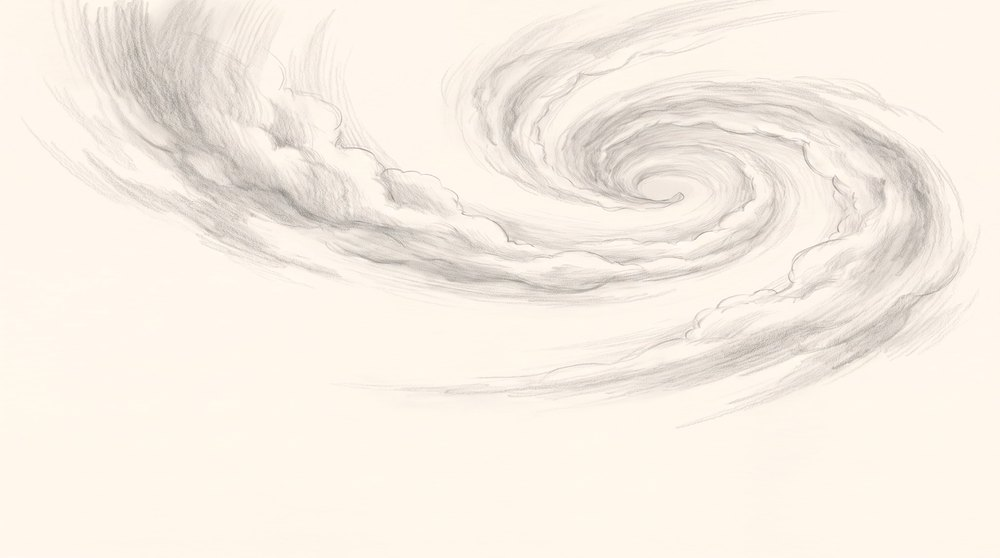
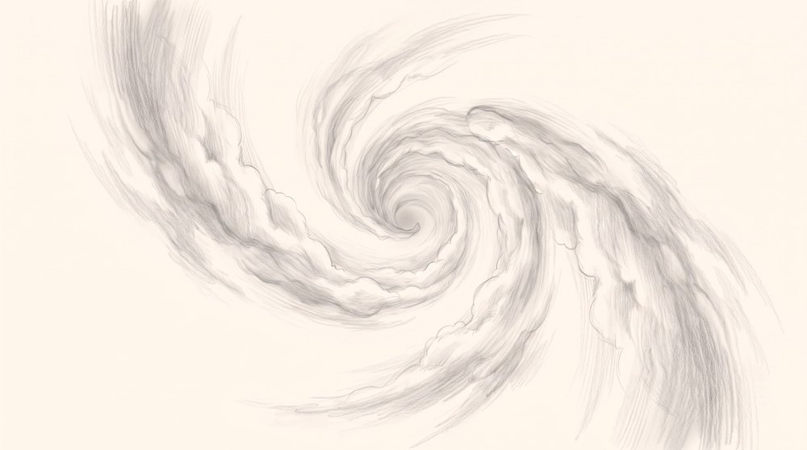

REJECTED FOR ITS ASPECT RATIO ONLY. Square, 2048 x 2048, where the film is 16:9. The drawing itself was right and this frame became the reference v3 was built from, so only the framing changed. Kept because a rejected take is not rubbish. APPROVED BY BABA IN CHAT 3.9.2026. It had been superseded by v3, which was generated separately while he was approving this one. v3 is kept as a proposal; this is the frame he chose.
← 9-0-WHITE-v1 · all frames · 9-1-VORTEX-UP-v3 →
A hand drawn pencil study on warm cream paper, the same graphite and the same sheet as the reference. Grey graphite only. There is no colour anywhere. A soft vortex of cloud, seen from below. It rises away from us and turns as it goes, narrowing to a small pale throat high in the upper part of the frame, slightly off centre. It is drawn the way cloud is drawn: long soft strokes made with the side of the pencil, smudged and blended, edges that dissolve rather than end. Light and airy, mostly bare paper, gentle rather than violent. The frame is otherwise empty. No keys of any kind. No person, no figure, no lettering, no border, no architecture, no floor, no objects of any kind carried in the cloud.

{kind=link}

THE ACCEPTED TAKE. The cloud vortex he is drawn up through after his eyes close. Widescreen, 2752 x 1536, throat centred, zero coloured pixels. Third ...
its own prompt
The same drawing as the reference, the same soft cloud vortex, the same warm cream paper, the same grey graphite, the same smudged side-of-the-pencil strokes and dissolving edges. Do not change the look and do not redraw it. Only the framing changes. The picture is WIDESCREEN, much wider than it is tall, and the spiral is CENTRED: its small dark throat sits in the middle of the frame, both across and down. The cloud opens outward from that throat in every direction and turns as it goes, reaching toward the left and right edges, with bare paper in the four corners. We are looking straight into the throat, the way you look down the middle of a whirlpool. The turn is still asymmetrical, so it reads as a spiral rather than a ring. Grey graphite only, no colour anywhere. No keys of any kind, no person, no figure, no hands, no animal, no face, no lettering, no numbers, no border, no architecture, no floor, no objects of any kind carried in the cloud.
A rejected take is not rubbish. Some were rejected for one thing only, an aspect ratio or a colour, and are the better drawing otherwise. They are here so a later session can see what was tried before trying it again.
Phase. Phase 6 of 15, THE VORTEX UP. The first frame after his eyes close, and the first frame of the second half. Everything before it arrives by frottage; everything after it is travelled through. There is no cut anywhere from here to the end.
Hero’s journey. CROSSING THE THRESHOLD. Not the door, the line under it. He has spent the first half arguing with the limit and here he stops arguing and goes through, and it is the point of no return: the film never returns him to the bicycle, rested or otherwise. What follows are the tests, three wrong rooms in the house of the body, and the mentor is not met until the very end, inside the cave, because in this film the thing holding him back turns out to be the thing that releases him.
Element. WATER, in its cloud form. WINNING_FILM calls water the only element that is both the danger and the cure, and that is exactly the ambiguity this frame needs: it is taking him somewhere he did not ask to go, and it is the only way he gets there. Cloud is water with the weight taken out, which is why it lifts rather than drowns. THRESHOLD is the second element here and it is the one the book says films waste: this is not a door, it is the line under it.
Symbol. The turn itself. A spiral says a thing is being drawn toward a centre rather than travelling in a line, and the book notes that the same shape turns up in shells, storms and seed heads, so nobody has to be taught it. It is never explained on screen and never mentioned. Anyone who feels it, feels it.
Composition. THE SPIRAL. Chosen because the book says it moves the eye rather than merely placing things, and moving the eye inward is the literal action of the shot. The throat is the tight end and the whole cloud wraps around it, so the audience travels the frame the way Manan travels the vortex. Note the film does not repeat this: the corridors are one point perspective and the credits are symmetrical, because a structure applied identically for two minutes stops being structure and becomes wallpaper.
Balance. Deliberately off centre and asymmetrical, which the book pairs with instability. A symmetrical version would read calm and official, which is the wrong feeling for the moment the floor goes out from under the film. Squint at it and the dark mass sits away from the middle, so the picture leans, and the audience feels that without knowing why.
The scene bed. One piece under the whole scene. It does not restart at a cut.
instrumental, no vocals, no percussion. slow ambient raga drone in a single unhurried key, tanpura and a low sustained cello holding one note underneath. gentle, weightless, unresolved. nothing arrives and nothing lands. 60 bpm, feels slower.
This shot. The same piece, re-arranged. Change the instruments, never the key or the tempo.
the same drone, and above it ONE bansuri flute alone. solo, breathy, unaccompanied, long phrases with audible breath between them, rising and circling rather than going anywhere. no other instrument enters. no percussion at all. the flute is the only thing moving.
Air, because this is cloud, and the breath instruments are what air sounds like. The bansuri plays alone because he is alone in it and because a solo has no ground under it, which is the feeling of the floor going out. The drone continues from the scene bed so the music does not restart when the picture changes; only the instrumentation does. Percussion stays out until he arrives in the house, so that the first heartbeat in the film is the heart hall.
THE DOOR OUT OF THE WORLD. The first frame of the second half, and the first thing the audience sees after his eyes close. It does two jobs at once: it convinces them the film has changed, and it explains nothing.
It carries no information on purpose. Nothing to read, no object, no symbol, nothing that could be a clue. Three earlier versions built the vortex out of keys and every one failed for the same reason: a tunnel made of keys tells the audience what he is looking for before he knows it himself, so the film says the word out loud long before he reaches the key door.
Emotionally it is gentle. Not a storm, and he is not in danger. He is being taken, not wrecked, and that softness is what makes the house of the body afterwards read as somewhere he belongs rather than somewhere he has crashed.
It moves the film forward by changing its grammar. Before it, things arrive by frottage. After it, nothing arrives and we travel through surfaces instead. This is the hinge, and it is why there is no cut anywhere after it.
The same vortex returns near the end, going down, when Coach Brain lets the key go. Rising into it and falling out of it is the shape of the whole second half.
THE BRAIN BRAKE
The Central Governor Theory · Breakthrough Junior Challenge 2026